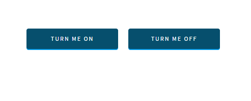

- Circuit
1. This example explains how to connect single LED and how control it with buttons inside app. First of all connect LED with 220 ohm resistor to pin 5.
-
Controling LED with button
1. Make sure that Involt is installed. If you don't know how to do this go to getting started page.
2. Open index.html. To control your Arduino just add interface elements with classes that Involt can understand.
3. Add code to body section to generate switch between HIGH and LOW states of pin. The last class is 0 because we want to start with inactive LED.
HTML
<body>
<div class="ard toggle D5 0"></div>
</body>4. Another example of LED blinking is two separate buttons. This time we want to set it to PWM value. Change the pin number from D5 to P5. To toggle between two PWM values you can also use toggle-PWM button.
HTML
<body>
<div class="ard button P5 40">Turn me ON</div>
<div class="ard button P5 0">Turn me OFF</div>
</body> - How to blink every second?
1. This example show how to use non-direct mode to control Arduino sketch.
2. To start use the first example with toggle button. ( ard toggle D5 0 )
3. In your Arduino sketch (with pinMode) you need to set " directMode " to false. Now your pin data is sent to "chromeDigital" array.
4. Toggle value with this code inside void loop:
ARDUINO
boolean directMode = false;
...
void setup() {
Serial.begin(115200);
pinMode(5,OUTPUT);
}
void loop() {
chromeReceive();
digitalWrite(5, chromeDigital[5]);
}
...
5. Add delay in void loop to blink every second:
ARDUINO
void loop() {
chromeReceive();
digitalWrite(5, chromeDigital[5]);
delay(1000);
digitalWrite(5, 0);
delay(1000);
}
6. Remember that delay is not recomended if you want to read data from arduino in real-time. Instead use Blink without delay tutorial on Arduino website.

2. Now add pinMode to void setup inside Involt Arduino sketch (in Arduino folder).
void setup() {
Serial.begin(115200);
pinMode(5,OUTPUT);
}